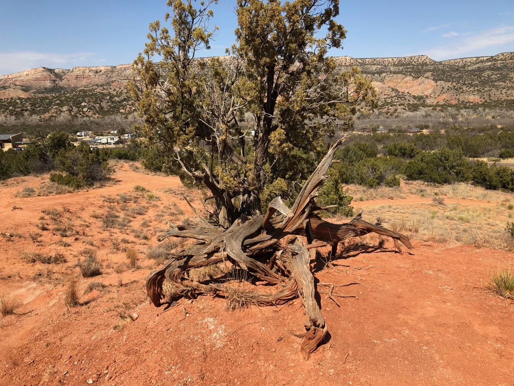

**We are attempting to beef up the Botany curriculum at TTU. Check this ad for a list of Botany courses offered by the Biology department: Botany Courses.**
Biology of Plants (BIOL 1401)
This course, intended for students not majoring in biology, provides a broad survey of plant biology.
Students will be able to recognize major plant groups and their characteristics, describe plant structure and its relationship to plant function, and associate the survival of plants with expression of genes controlling plant function.
The course includes a lab section and satisfies university lab course requirements.
Offered every Spring/Fall. Fall 2017 Syllabus.
Plant Physiological Ecology (BIOL 4350)
This course will cover the fundamentals of plant physiological processes at multiple scales, from the cellular to whole-plant level.
The class will consider physiological responses to a variety of abiotic and biotic conditions across space and time, including responses to expected future global changes.
We will examine plant strategies that influence their form, function, and distribution.
The course will consider both natural and agricultural contexts. Students will tackle classical literature as well as current topics in plant physiology.
Classes will be primarily discussion based.
Offered Spring of odd-numbered years.
Undergraduate Research in Plant Ecophysiology (BIOL 4300-029)
As part of this research experience, undergraduates will design and carry out their own research project under the supervision of Nick Smith and members of the Smith lab.
Project may involve, but are not limited to, laboratory, greenhouse, field, and/or computer simulations.
Offered every semester. Spring 2018 Syllabus.
